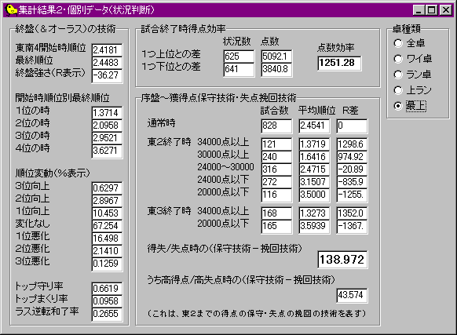

「できすぎくん」は非常に多くのデータを出力します。
和了率や放銃率、リーチ率 などはぱっと見て意味がわかるでしょう。
ここでは、少しわかりにくいと思われる各データの数式的定義、及びそれの表す意味の説明、平均的な値の指標などを与えます。
安定Ｒ
集計された試合結果と同じ結果が今後も出続けると仮定した上で、その後収束していくようなＲの値の理論値。
（正規化された）安定Ｒ
素安定Ｒは、計測された安定Ｒそのものを表す。
それに対して、安定Ｒ第一、および第二は、当該成績を残す人が第一のみ、または第二のみで打った場合の、安定Ｒを示す。
第一・第二のＲ分布は異なるので、とつげき東北ＨＰにおいて論じられた第一・第二Ｒ互換理論を元に、安定Ｒを変換している。
これによって、第一のみ、第二のみ、または第一と第二の混合で打った人の安定Ｒをダイレクトに比較することが可能となる。
なお、試合情報に「東風戦」「東南戦」の文字がない全ての試合は「不明」と考え、不明でない試合の第一：第二比率をそのまま適用している。
Ｒ互換の方法は厳密ではない。最上卓のＲ分布の形状は正規分布とピッタリとは一致しない。しかし「完璧ではない」からと言って感覚的に「第一の方が厳しい」「実際は最強レベルになると第二が〜〜」などと言うよりは、中心極限定理でばっさりと概観を出す方が有用でしかも精確であると考え、このような互換を行っている。直感的な反論は不要である。
保証安定Ｒ
ある試合数のある成績を納めるために現実的にあり得る安定Ｒの範囲を示す。集計期間内の試合数の差による安定Ｒの分散の差を考慮し、異なる試合数であっても成績を比較するために開発された指標である。他人や、自分の過去の成績と現在の成績を比較する場合、この指標の最低値を用いて比較すべきである（安定Ｒは自分の実力そのものを予測するために用い、保証安定Ｒは自分の実力と他の実力を比較するために用いる）。
具体的には次のようにして求める。
ある実力Ｊ（Ｒ表示）のプレイヤーが10000試合の試合結果中から連続するＳ試合を全てのパターンにわたって（10000-Ｓ+1通り）取り出す。そのうちで最高成績であったような成績だけを申告するという試行を何度も行う時、それによる、実力 Ｊ と申告された安定Ｒ ｒ の差の平均をＥ、標準偏差をσとすると、申告された安定Ｒ ｒ は、95％以上の確率で Ｊ−Ｅ−２σ 〜 Ｊ＋Ｅ＋２σ の範囲内にある。逆に言えば、彼の実力Ｊは ｒ−Ｅ−２σ 〜 ｒ＋Ｅ＋２σ の範囲内にある。つまり、10000試合もの試合の中から最高の成績の「選り好み」をした場合でさえ、95％の確率でその範囲にあるような実力の幅を決定することができる（95％というのは、「10000試合からもっとも極端な成績のＳ試合を取り出す」試行のうちの95％である。つまり、自分がこの範囲を超えようと思えば、20万試合程度打つ必要があるがこれは困難だろう）。このことから、あるＳ試合の結果計測された安定Ｒが、どの程度実力からの幅を持つかを合理的に計算することができる。なお、Ｅとσはシミュレーションと考察によって決定された。詳しくはとつげき東北のＨＰにある論文を参照されたい。
例えばとつげき東北の牌譜から「かなりついていた時期」を集計すると、保証安定Ｒの最低値は2030強になった。これがいかに「ついていた、恣意的に取り出されたデータ」であろうとも、95％以上の確率でとつげき東北の実力は安定Ｒ2030より高いことが言えるわけである。実際のところ、1000試合単位の保証安定Ｒの最高値が2000を越えるような人は稀であり、このような差は「明確な実力差」と言うことができる。また、保証安定Ｒの最低値はその性質上、試合数に依存せずに他人と競える、もっとも優れた実力の指標と言えよう（10000という試合数についても論文中で考察されているので参照のこと）。
和了素点
和了した時の、役の純粋な得点を元に、「和了平均点」としたもの。
言い替えると、リーチ棒収入や本場数収入を含まない上がり点の平均。
「放銃時素点」などもこの意味である。
和了時収入
本場数やリーチ棒収入を含めた上がり点の平均。
和了平均順目
和了したときの「順目」だが、計算方法は厳密ではない。
牌譜に、１打１打の記録が「1G3m 1D5p 」などと記入されている（この場合プレイヤー１が３マンをツモって５ピンを捨てた）。
概ね、１人の１動作にこの文字列が10文字分使用されている。そこで、40文字（10文字×４人分）を「１順」としてカウントして、和了を表す「A」が出現した場所を「何順目か」に変換するという方法を用いている。
カンが発生した場合や複数のリーチがかかった場合などに、０．２とかそういうレベルで誤差が生ずる。
また、ポンなどによってツモが飛ばされた場合なども誤差が生ずるが、大きなデータなら概ね問題ない程度と思われる。
うち親和了*
和了した局のうち、自分が親であった局の割合。
最も単純に考えれば、４回に１回は親であるから25％なのだが、実際は、親の時は多少攻撃的に上がりに向かうことが戦略上有利であるため、例えばとつのデータであると30％を超えている。この値がもし25％を切っているようなら、ついていないか、または戦略を改めた方が良い。
非和了局終了率
「流局」によって局が終了した確率。
ちなみに、これを元に、その卓種類での平均的な「和了率」を概算することができる。
「誰かが上がって局が終了する確率」は「１−（非和了局終了率）÷100」にほぼ等しい（９種９牌などを無視すれば）。
「誰かが上がった局」の４回に１回上がるのが平均的である。
従って「（１−（非和了局終了率）÷100）÷４」が、平均的な和了率ということになる。
非和了局終了率は、とつの最上卓のデータで約15％であった。
これを元に平均的な和了率を計算すると21.25％となる（ただしとつの実際の和了率は20％弱であり、とつは「守備型」と言える）。
流局ﾃﾝﾊﾟｲ率(推)
流局した局のテンパイ率の推定値。
実際にテンパイしていたかどうかを厳密に知るためには、手牌の最終形まで計算しなければならず、このソフトウェアの集計の目的に対しては効率が悪いため、推定値を出力している。
計算式は非公開。
和了時収入
集計期間中の全ての試合の全ての局に対して、そのうちの１局をランダムに取り出した時、和了によって得ている点数の平均。
そのプレイヤーは、あるランダムな１局について見れば、そのような点数を和了によって見込むことができる。
他収入
和了時収入と同じように計算するが、こちらは和了以外によって得られた収入。
メインは「流局バップ」となるが、チョンボ収入も含まれる。
局あたり全収入
和了時収入と他収入の合計値で、あるプレイヤーのランダムな１局を取り出したとき、見込むことが可能な「点数の収入」の平均点である。
うち親へ放銃*
単純に考えれば33％が普通である。
実際は、親は攻撃的に攻めてくることなどから、例えば最上卓では33％を超えると思われる。
親かぶり割合
他家がツモ和了した瞬間、自分が親である確率は単純計算では、25％である。
ただし、自分が親の場合は戦略上攻撃的に攻める方が有利であり、その分ツモられる確率は減少する（代わりに放銃率が上昇する）。
従って、例えばとつの最上卓のデータでは親かぶり割合は23％程度である。
ただし、親かぶり割合は厳密な「親かぶり率」と一致しない。
厳密な親かぶり率は、親のときのみの集計での被ツモ率であるが、親かぶり割合は、ツモが発生した時に自分が親であった割合を表す。
先制リーチ割合
全ての「リーチ」が発生した局のうち、自分が最初に「リーチ」した局の割合。定義上、25％が平均となる。
とつの場合、28％程度であるが、親の場合だけの集計では32〜34％となる。戦略上有利だからである。
リーチ時和了率
全ての、自分が「リーチ」した局のうち、自分が和了した局の割合。
これは、卓の種類によってまちまちになる。
ワイ卓やラン卓のように相手が全ツッパ系のヘボ打ちであれば60％程度が見込める（実測値であって、リーチのうまさなどにも大きく左右される）。
昔の上ラン（最上卓ができる以前の、強かった上ラン）だと、とつデータで50％程度だったが、最近は55％〜に上昇しているもよう。
最上では50％弱が平均である（実測値）。
リーチ時放銃率
リーチ後に放銃した割合。
ちなみにこれこそ「運のみで」大きく変化する指標であり、しかも順位とかなり大きく相関する指標である（上がれるはずだった局に、上がるどころか失点するのだから、順位と大きく相関するのもうなずける）。
２副露時和了率
２副露は、しばしば形式テンパイや終盤の一発消しのために用いられることもあって、必ずしもリーチのように「２副露＝（上がれる形の）テンパイ」を意味するわけではない。だからリーチ和了率などより圧倒的に小さな値になるであろう。
とつの最上での２副露時和了率は30％であった。
２副露時放銃率
２副露した後の放銃率。２副露＝テンパイ ではないのにも関わらずリーチ時放銃率よりも若干高い値になる（とつの場合）のは、いかに２副露というのが守備の点で不利な行為であるかを示す。とつの２副露時放銃率は１６％程度。
ツモ上がり割合
例えばとつの最上卓リーチ時ツモ上がり割合は42％である。
普通、当たり牌をたまたま自分がつかむ確率は25％であるから、ツモ上がり確率は25％になりそうなものである。
最上卓では、リーチすると他家がしっかり降りるため、どうしてもツモによる和了が多くなる。
ちなみにこの場合、各々が当たり牌をつかむとして、そのうち何パーセントが「アンパイに切り替えられて切られる」のかを考慮すれば、リーチに対して他家が何人程度降りるのかを計算することができる。
また、２副露時にはツモ上がり割合は26％であった。
これは、２副露に対しては他家があまり降りないという傾向を表す。
ただし親の場合は別で、親の２副露ツモ上がり割合は35％程度になった。

終盤（＆オーラス）の技術
東４以降の「最後の局の０本場」を迎えた時の順位と、最終順位の関係のデータが出力される。
最後の局の最後の本場、にしても良いかと考えたが、一般に、その本場がレンチャンすることを期待して打つという機会は少なく、０本場を選ぶ方が適当であると結論した。
概ね、値の意味は見たままである。
ここでの「最終順位」が、全般データの方の「最終順位」とずれる場合、東２などで誰かがハコって終了したなどの要因からであってバグではない。
「トップ守り率」は、最後の局を迎えた時点でトップだった場合に、そのうち最終順位もトップであった割合。
「トップまくり率」は、最後の局を迎えた時点でトップでなかった場合に、そのうち最終順位がトップであった割合。
「ラス逆転率」は、最後の局を迎えた時点で４位であった場合に、そのうち最終順位が４位でなかった割合である。
試合終了時得点効率
試合終了時に、自分より１つ上位の人の点数と、自分の点数の差、そして自分より１つ下位の人の点数と、自分の点数との差が集計される。
「まくるならギリギリでまくり」「まくれないなら何点でも一緒」と考えて打つ方が、Ｒ的に効率の良い戦術となる。
効率を何も考えずに打った場合、点数効率はちょうど０になる。
また効率が悪い人は、点数効率は負の値を取ると思われる。
序盤〜獲得点保守技術・失点挽回技術
東２終了時の得点に応じて、最終的な順位がいくつになるかが表示され、その順位が、そういった条件を無視した場合の順位に比較してどの程度「良い」か「悪い」かを、Ｒの値に変換して「Ｒ差」として表示している。
また、「東２終了時に30000点以上ある場合のＲ差＋東２終了時に24000点以下しかない場合のＲ差」を、太字で出力している（上の例では１３８．９７２）。
本来、同じ「原点から7000点離れた」位置にいるなら、その時のおのおのの順位は、「原点の」位置にいる場合の順位から同じ程度離れるはずだと考え得る。
（つまり、27000点なら２．５位が取れる人が27000＋7000点で２．０位を取るなら、27000−7000点の場合３．０位くらいになるだろう、と考えられる）
もちろんこれは最も単純なモデルの場合で、実際にはそうではなくて、４位なら少々危険を冒してでも２位や１位を狙えるし、１位なら、ムリせず安全に打たなければ戦略上不利になる。
大きく得点を稼いだときに、いかにそのアドバンテージを活かして普段より高い平均順位を保つか、また逆に、大きく失点したときに、いかにそのビハインドを取り返して普段の平均順位に近づけるか、「点数状況に応じた攻め・守り」をしている度合いが、Ｒ値に換算されて、太字で示されているわけだ。
ただし、この指標は少ない試合数では非常に偶然性に左右されることに注意しよう。
「30000点以上」の試合数・「24000点以下」の試合数が、いずれも400ずつあった場合などでも、平気で80とかその程度の誤差は出ると思われる。
（例えばとつの「好調」だった８月９月のデータなら、この値は240とかになっている）
「ついている」と感じる時は、和了率などが高いだけでなく、たまたま上がりたいところでちょうどまくり手を上がったり、他家が他家に振り込んで順位が上がったりして、このような「状況判断技術」の点数も高くなる傾向がある。
この指標はだから、ついている時やついていない時の値を見るのではなく、「まあ、こんなもんかなあ」という様子の時で他者や過去の自分の値と比較し、技術向上に役立てることが最もふさわしいのだ。
ちなみにとつは、昔のデータと比較して、明らかにこの指標の値が上昇した。
安定Ｒ1850くらいだった頃は、この値が０とか、時にはマイナスであったものだ。